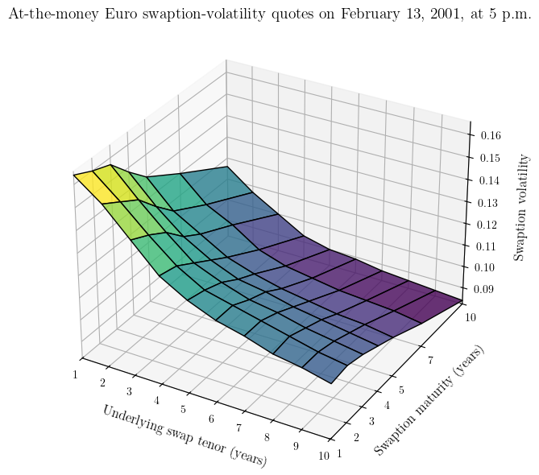
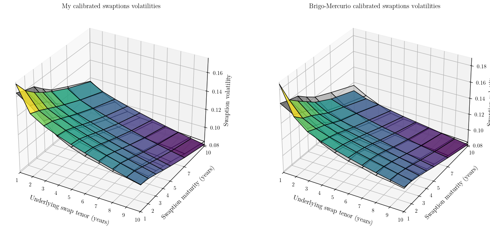
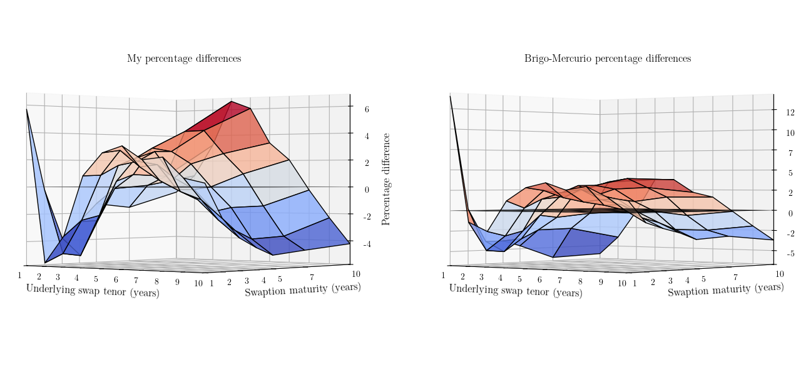
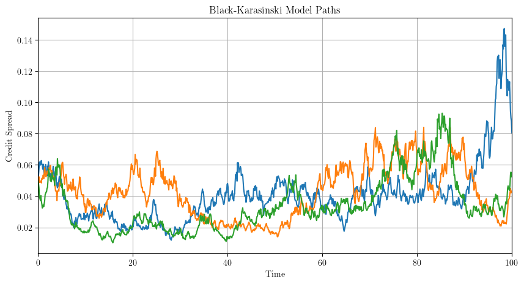
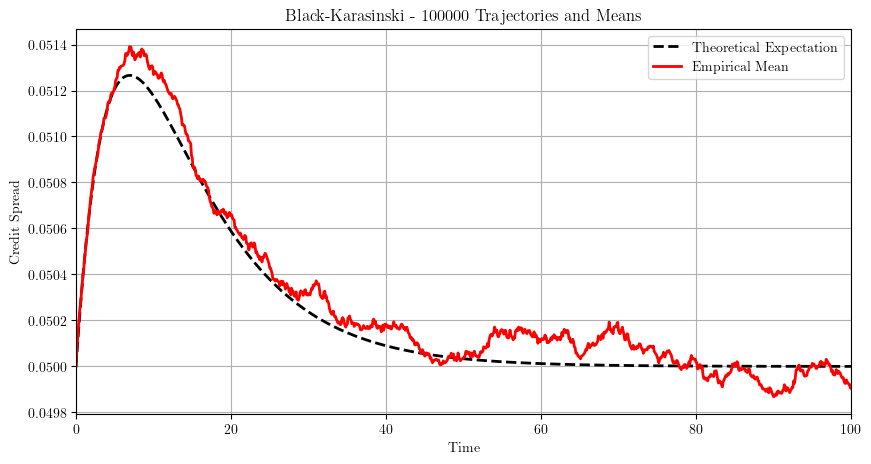
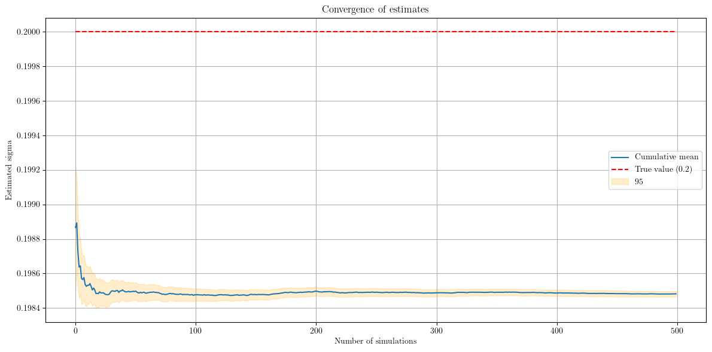

# Import necessary libraries
import QuantLib as ql
import numpy as np
import pandas as pd
import matplotlib.pyplot as pltV.I.E BNP RMIR - Madrid
Assignments
EXERCISE 1/ Model calibration exercise
The functionality of the QuantLib G2 class is explained in the appendix.
Setup
Evaluation date
Let’s start by setting the evaluation date in QuantLib to February 13, 2001, ensuring that all market data, discounting, and instrument pricing are aligned with that specific historical context. Without this step, QuantLib would default to the current system date.
# Create a QuantLib date object representing February 13, 2001
todays_date = ql.Date(13, 2, 2001)
# Set the global evaluation date in QuantLib
ql.Settings.instance().evaluationDate = todays_dateYield curve
We define a flat 5% yield curve to provide the necessary term structure input for the G2++ model. The yield curve is necessary to anchor the model to the current term structure for computing discount factors and forward rates.
# Create a QuantLib SimpleQuote object to store a constant interest rate of 5%
rate = ql.SimpleQuote(0.05)
# Create a QuantLib QuoteHandle to manage and reference the SimpleQuote object
rate_handle = ql.QuoteHandle(rate)
# Define the day count convention as Actual/360
day_count = ql.Actual360()
# Create a QuantLib FlatForward yield curve
flat_forward_curve = ql.FlatForward(todays_date, rate_handle, day_count)
# Create a YieldTermStructureHandle to manage and reference the flat forward yield curve
term_structure = ql.YieldTermStructureHandle(flat_forward_curve)Market data
Now, we need to implement the market data from Table 4.2. At-the-money Euro swaption-volatility quotes on February 13, 2001, at 5 p.m. in the Brigo-Mercurio book.
# Create a list of QuantLib Period objects representing swaption maturities T
swaption_maturities = [ql.Period(i, ql.Years) for i in [1, 2, 3, 4, 5, 7, 10]]
# Create a list of QuantLib Period objects representing tenors t_n - t_0
swap_tenors = [ql.Period(i, ql.Years) for i in range(1, 11)]
# Define a numpy array to store market swaption volatility data for different maturities and tenors
market_vols = np.array([
[0.1640, 0.1550, 0.1430, 0.1310, 0.1240, 0.1190, 0.1160, 0.1120, 0.1100, 0.1070],
[0.1600, 0.1500, 0.1390, 0.1290, 0.1220, 0.1190, 0.1160, 0.1130, 0.1100, 0.1080],
[0.1570, 0.1450, 0.1340, 0.1240, 0.1190, 0.1150, 0.1130, 0.1100, 0.1080, 0.1060],
[0.1480, 0.1360, 0.1260, 0.1190, 0.1140, 0.1120, 0.1090, 0.1070, 0.1050, 0.1030],
[0.1400, 0.1280, 0.1210, 0.1140, 0.1100, 0.1070, 0.1050, 0.1030, 0.1020, 0.1000],
[0.1300, 0.1190, 0.1130, 0.1050, 0.1010, 0.0990, 0.0970, 0.0960, 0.0950, 0.0930],
[0.1160, 0.1070, 0.1000, 0.0930, 0.0900, 0.0890, 0.0870, 0.0860, 0.0850, 0.0840]
])
Calibration
SwaptionHelper
Let’s iterate through the market data to create a SwaptionHelper for each combination of maturity and tenor, which we store in a list. A SwaptionHelper in QuantLib is a calibration tool that links market swaption quotes (volatility, expiry, tenor) to a pricing model, enabling parameter optimization by matching model-generated swaption prices to observed market prices.
swaption_helpers = []
# Iterate over each combination of swaption maturities and tenors
for i, maturity in enumerate(swaption_maturities):
for j, tenor in enumerate(swap_tenors):
# Create a QuoteHandle for the market volatility value at the given maturity and tenor
vol_handle = ql.QuoteHandle(ql.SimpleQuote(market_vols[i, j]))
# Create a SwaptionHelper object to model a swaption with specified parameters
helper = ql.SwaptionHelper(
maturity, tenor, vol_handle,
ql.Euribor6M(term_structure),
ql.Period(1, ql.Years),
day_count, day_count,
term_structure, ql.BlackCalibrationHelper.RelativePriceError
)
swaption_helpers.append(helper)It is now time to instantiate the model using the G2 class as outlined in the appendix of the report.
# Instantiate the G2++ model using the default parameter values for a, sigma, b, eta, and rho
g2_model = ql.G2(term_structure)SwaptionEngine
The following line of code sets up the pricing engine for the G2++ swaption model, where the model’s parameters and equations are embedded. Specifically, the g2_model object contains the G2++ model that describes the evolution of interest rates, and the engine utilizes this model to calculate swaption prices. By specifying the range (1.0) and the number of intervals (1000), this line effectively configures the numerical integration of the pricing formula, ensuring that the model accounts for the necessary standard deviations and provides an accurate approximation of the swaption’s value based on the G2++ model’s dynamics.
# Create a G2SwaptionEngine with the given G2 model, time step of 1.0, and 1000 discretization intervals for calibration
engine = ql.G2SwaptionEngine(g2_model, 1.0, 1000)We now have to loop through swaption_helpers and set each helper’s pricing engine to the G2SwaptionEngine for calculating swaption prices.
# Set the pricing engine for each swaption helper in the list to the G2++ swaption engine
for helper in swaption_helpers:
helper.setPricingEngine(engine)Optimization
Eventually, we calibrate the G2++ model using the Levenberg-Marquardt optimization method and specified end criteria on the swaption helpers.
# Calibration of the G2++ model using Levenberg-Marquardt method with specified end criteria
optimization_method = ql.LevenbergMarquardt()
# Explicit stopping criteria:
end_criteria = ql.EndCriteria(1000, 500, 1e-6, 1e-6, 1e-6)
# end_criteria = ql.EndCriteria(
# maxIterations=1000, # Maximum number of iterations
# maxStationaryStateIterations=500, # Iterations without improvement
# rootEpsilon=1e-6, # Tolerance on parameters
# functionEpsilon=1e-6, # Tolerance on the cost function
# gradientNormEpsilon=1e-6 # Tolerance on the gradient
# )
# Run the calibration with tracking
g2_model.calibrate(swaption_helpers, optimization_method, end_criteria)Let’s focus on the convergence of the method.
print(g2_model.endCriteria())3According to the file ql/math/optimization/endcriteria.hpp :
enum Type {
None, // 0
MaxIterations, // 1
StationaryPoint, // 2
StationaryFunctionValue, // 3
StationaryFunctionAccuracy, // 4
ZeroGradientNorm, // 5
FunctionEpsilonTooSmall, // 6
Unknown // 7
};and the file ql/math/optimization/endcriteria.cpp
bool EndCriteria::checkStationaryFunctionValue(
const Real fxOld,
const Real fxNew,
Size& statStateIterations,
EndCriteria::Type& ecType) const {
if (std::fabs(fxNew-fxOld) >= functionEpsilon_) {
statStateIterations = 0;
return false;
}
++statStateIterations;
if (statStateIterations <= maxStationaryStateIterations_)
return false;
ecType = StationaryFunctionValue;
return true;
}A return of 3 (StationaryFunctionValue) means that the algorithm stopped because the change in the objective function (the cost) between two iterations became smaller than the functionEpsilon threshold of \(1e-6\). It indicates that the algorithm has converged to a local minimum.
I haven’t found a direct way in
QuantLibto access the number of iterations of the method or the evolution of the objective function
Results
Calibrated Parameters
Let’s take a look at the obtained parameters.
params = g2_model.params()
\[\begin{array}{cc}
\begin{array}{|c|c|} \hline
\textbf{Parameter} & \textbf{Calibrated Value} \\ \hline
a & 11.417883267 \\ \hline
b & 0.862582670 \\ \hline
\sigma & 0.086663458 \\ \hline
\eta & 0.012178218 \\ \hline
\rho & -0.772255479 \\ \hline
\end{array}
& \quad
\begin{array}{|c|c|} \hline
\textbf{Parameter} & \textbf{Calibrated Value} \\ \hline
a & 0.773511777 \\ \hline
b & 0.082013014 \\ \hline
\sigma & 0.022284644 \\ \hline
\eta & 0.010382461 \\ \hline
\rho & -0.701985206 \\ \hline
\end{array}
\end{array}\]
\[\textbf{Table.} \text{ Calibrated Values (My values on the left, Brigo-Mercurio values on the right)}\]
Table 4.3. G2++ calibrated swaptions volatilities
# Initialize an array to store the adjusted volatilities
fitted_vols = np.zeros((len(swaption_maturities), len(swap_tenors)))
# Compute the adjusted volatilities using the G2++ model
for i, maturity in enumerate(swaption_maturities):
for j, tenor in enumerate(swap_tenors):
helper = swaption_helpers[i * len(swap_tenors) + j]
# Compute the swaption price using the calibrated G2++ model
model_price = helper.modelValue()
# Compute the corresponding implied volatility
fitted_vols[i, j] = helper.impliedVolatility(
model_price, 1e-6, 100, 0.05, 1.0
)
\[\begin{array}{cc}
\begin{array}{|c|c|c|c|c|c|c|c|c|c|c|}
\hline
& 1y & 2y & 3y & 4y & 5y & 6y & 7y & 8y & 9y & 10y \\ \hline
1y & 0.1733 & 0.1465 & 0.1380 & 0.1321 & 0.1270 & 0.1225 & 0.1182 & 0.1143 & 0.1107 & 0.1073 \\ 2y & 0.1597 & 0.1427 & 0.1356 & 0.1301 & 0.1252 & 0.1207 & 0.1165 & 0.1127 & 0.1091 & 0.1057 \\ 3y & 0.1510 & 0.1376 & 0.1312 & 0.1260 & 0.1212 & 0.1169 & 0.1128 & 0.1091 & 0.1055 & 0.1023 \\ 4y & 0.1441 & 0.1326 & 0.1265 & 0.1215 & 0.1169 & 0.1127 & 0.1088 & 0.1052 & 0.1018 & 0.0987 \\ 5y & 0.1382 & 0.1278 & 0.1221 & 0.1173 & 0.1129 & 0.1088 & 0.1050 & 0.1015 & 0.0982 & 0.0952 \\ 7y & 0.1279 & 0.1191 & 0.1139 & 0.1094 & 0.1053 & 0.1015 & 0.0979 & 0.0947 & 0.0916 & 0.0888 \\ 10y & 0.1155 & 0.1079 & 0.1032 & 0.0992 & 0.0954 & 0.0920 & 0.0888 & 0.0858 & 0.0830 & 0.0805 \\ \hline
\end{array}
& \quad
\begin{array}{|c|c|c|c|c|c|c|c|c|c|c|}
\hline
& 1y & 2y & 3y & 4y & 5y & 6y & 7y & 8y & 9y & 10y \\ \hline
1y & 0.1870 & 0.1529 & 0.1395 & 0.1327 & 0.1276 & 0.1231 & 0.1190 & 0.1154 & 0.1120 & 0.1085 \\
2y & 0.1603 & 0.1427 & 0.1348 & 0.1295 & 0.1251 & 0.1210 & 0.1174 & 0.1139 & 0.1103 & 0.1068 \\
3y & 0.1509 & 0.1376 & 0.1307 & 0.1258 & 0.1216 & 0.1180 & 0.1146 & 0.1109 & 0.1073 & 0.1041 \\
4y & 0.1422 & 0.1311 & 0.1252 & 0.1210 & 0.1175 & 0.1142 & 0.1106 & 0.1069 & 0.1037 & 0.1005 \\
5y & 0.1335 & 0.1247 & 0.1199 & 0.1165 & 0.1134 & 0.1098 & 0.1062 & 0.1030 & 0.0998 & 0.0968 \\
6y & 0.1218 & 0.1161 & 0.1124 & 0.1087 & 0.1050 & 0.1018 & 0.0986 & 0.0954 & 0.0928 & 0.0902 \\
7y & 0.1090 & 0.1029 & 0.0997 & 0.0965 & 0.0934 & 0.0909 & 0.0884 & 0.0858 & 0.0833 & 0.0809 \\
\hline
\end{array}
\end{array}\]
\[\textbf{Table 4.3.} \text{ G2++ calibrated swaptions volatilities (My values on the left, Brigo-Mercurio values on the right)}\]

Table 4.4. Swaptions calibration results: percentage differences
# Compute percentage differences
relative_errors = (fitted_vols - market_vols) / market_vols
\[\begin{array}{cc}
\begin{array}{|c|c|c|c|c|c|c|c|c|c|c|}
\hline
& 1y & 2y & 3y & 4y & 5y & 6y & 7y & 8y & 9y & 10y \\ \hline
1y & 5.69\% & -5.50\% & -3.52\% & 0.81\% & 2.44\% & 2.91\% & 1.93\% & 2.09\% & 0.65\% & 0.31\% \\ 2y & -0.21\% & -4.88\% & -2.41\% & 0.86\% & 2.64\% & 1.44\% & 0.47\% & -0.28\% & -0.84\% & -2.12\% \\ 3y & -3.82\% & -5.08\% & -2.09\% & 1.58\% & 1.86\% & 1.61\% & -0.17\% & -0.86\% & -2.27\% & -3.49\% \\ 4y & -2.63\% & -2.52\% & 0.43\% & 2.11\% & 2.58\% & 0.65\% & -0.16\% & -1.71\% & -3.05\% & -4.21\% \\ 5y & -1.29\% & -0.13\% & 0.92\% & 2.88\% & 2.61\% & 1.69\% & 0.02\% & -1.46\% & -3.69\% & -4.79\% \\ 7y & -1.61\% & 0.10\% & 0.80\% & 4.19\% & 4.23\% & 2.48\% & 0.96\% & -1.39\% & -3.57\% & -4.54\% \\ 10y & -0.46\% & 0.85\% & 3.25\% & 6.65\% & 6.05\% & 3.36\% & 2.05\% & -0.24\% & -2.32\% & -4.22\% \\ \hline
\end{array}
& \quad
\begin{array}{|c|c|c|c|c|c|c|c|c|c|c|}
\hline
& 1y & 2y & 3y & 4y & 5y & 6y & 7y & 8y & 9y & 10y \\ \hline
1y & 14.01\% & -1.35\% & -2.43\% & 1.27\% & 2.86\% & 3.44\% & 2.59\% & 3.03\% & 1.81\% & 1.40\% \\
2y & 0.17\% & -4.88\% & -3.03\% & 0.39\% & 2.51\% & 1.67\% & 1.19\% & 0.84\% & 0.31\% & -1.12\% \\
3y & -3.91\% & -5.10\% & -2.49\% & 1.44\% & 2.21\% & 2.64\% & 1.42\% & 0.86\% & -0.64\% & -1.83\% \\
4y & -3.92\% & -3.59\% & -0.61\% & 1.65\% & 3.08\% & 1.97\% & 1.44\% & -0.07\% & -1.26\% & -2.41\% \\
5y & -4.61\% & -2.54\% & -0.91\% & 2.23\% & 3.09\% & 2.65\% & 1.16\% & -0.01\% & -2.13\% & -3.25\% \\
6y & -6.29\% & -2.47\% & -0.50\% & 3.51\% & 3.94\% & 2.82\% & 1.65\% & -0.58\% & -2.33\% & -3.01\% \\
7y & -6.08\% & -3.81\% & -0.34\% & 3.80\% & 3.79\% & 2.17\% & 1.58\% & -0.21\% & -2.00\% & -3.69\% \\
\hline
\end{array}
\end{array}\]
\[\textbf{Table 4.4.} \text{ Swaptions calibration results: percentage differences (My values on the left, Brigo-Mercurio values on the right).}\]

EXERCISE 2/ Assessment of calibration uncertainty
The Black-Karasinski model
This section provides a synthesis of the documents I have reviewed during my research, as referenced in the bibliography. In particular, I would like to highlight two key papers:
- The foundational article by (Black and Karasinski 1991)
- A more recent work by (Karasinski and Turfus 2021), which recounts the story of how the model was developed and examines its subsequent impact.
The need of a new model
Ideally one wants a process for the short-term interest rate such that negative interest rates are prevented, but the zero level may be reached and maintained for extended periods of time. None of the normal, lognormal and square root processes, satisfy both these requirements.
- A normal process (e.g. Hull-White model) does not prevent interest rate to become negative. Moreover volatility does not increase as the short rate rose higher than the forward rate.
- A lognormal process (e.g. Dothan model) does not admit a zero interest rate.
- A square root process (e.g. Cox-Ingersoll-Ros model) process makes the zero level a reflecting barrier. It doesn’t allow rates to get stuck at zero.
The Black-Karasinski model proved highly attractive at the time as it addressed these deficiencies.
Assumptions
The standard assumptions underlying perfect markets are made :
- changes in the yields of all zero coupon bonds are perfectly correlated,
- the expected one period returns are the same for all securities,
- the market is free of taxes and transaction costs.
Log normality
Since the market formulas for caps and swaptions are based on the assumption of lognormal rates, it seemed reasonable to choose the same distribution for the instantaneous short-rate process. Notice, however, that a lognormal instantaneous short-rate process does not lead to log;normal simple forward rates or lognormal swap rates.
A lognormal model is a model where short-term interest rate are lognormally distributed. The short-term interest rate is assumed to have a lognormal distribution at any time horizon. A lognormal distribution is fully described by its mean and variance, which are functions of time, so we have a different lognormal distribution of the short-term interest rate at each future time. The lognormality feature holds several advantages for calibration of the model. Negative interest rates are prevented and the volatility input may be specified in percentage terms, i.e. the volatility refers to relative price moves. This is the market convention for quoting volatilities, so calibration to market-observed volatilities is simplified.
Dothan (1978) introduced a lognormal model for interest rates in which the logarithm of the spot rate follows a Brownian motion with constant drift.
Another way of obtaining a lognormal model for interest rates is to suppose that the logarithm of the spot rate follows an Ornstein-Uhlenbeck process. In other words the instantaneous short rate process evolves as the exponential of an Ornstein-Uhlenbeck process. \[\mathrm{d}\big(\ln(r(t))\big) = \Big( \theta - \phi\ln\big(r(t)\big)\Big)\mathrm{d}t + \sigma\,\mathrm{d}W_t\] – \(\phi\) gives a measure of the speed at which \(\ln\big(r(t)\big)\) tends to its long-term value
– \(\sigma\) is the standard deviation rate of \(\frac{\mathrm{d}r(t)}{r(t)}\), namely the standard deviation per time unit of the instantaneous return of \(r(t)\).
Mean reversion
When mean reversion is combined with a lognormal model, we have three time-dependent factors, an example being the BDT model, \[\mathrm{d}\big(\ln(r(t))\big) = \Big( \theta(t) - \phi(t)\ln\big(r(t)\big)\Big)\mathrm{d}t + \sigma(t)\,\mathrm{d}W_t\] However, here \(\phi(t)\) is a function of \(\sigma(t)\). Dropping this functional dependence, the Black-Karasinski model may be written as: \[\mathrm{d}\big(\ln(r(t))\big) = \phi(t)\big( \ln(\mu(t)) - \ln(r(t))\big)\mathrm{d}t + \sigma(t)\,\mathrm{d}W_t\]
- \(\mu(t)\) be the target interest rate, i.e. the reversion level
- \(\phi(t)\) is the speed or rate of the mean reversion
The Black-Karasinski model is a model, where the target rate, mean reversion rate and local volatility are deterministic functions of time. The specification of three time-dependent factors allows the future short-term interest rate volatilities to be specified independently of the initial volatility term structure.
Drawbacks
The Black-Karasinski model is not an affine term-structure model.
The Black-Karasinski model is less analytically tractable than the Hull-White model since it does not yield explicit expressions for either zero-coupon bonds or options on them.
The Black-Karasinski model shares the explosion problem, common to all lognormal models for the spot rate of interest, that the expected value of the money-market account is infinite no matter which maturity is considered \(\mathbb{E}[B_t]=\infty\). This means that in an arbitrarily small time we can make infinite money on average starting from one unit of currency. As a consequence, the price of a Eurodollar future is infinite, too.
A few theoretical results before to start exercise 2
We assume the following dynamics \[\mathrm{d}\big(\ln(S_{i,t})\big) = \kappa \left(\ln(\theta) - \frac{\sigma^2}{4\kappa} - \ln(S_{i,t})\right)\mathrm{d}t + \sigma\,\mathrm{d}W_t\]
$$
\frac{\mathrm{d}S_{i,t}}{S_{i,t}}
= \left(\kappa \left(\ln(\theta) - \frac{\sigma^2}{4\kappa} - \ln(S_{i,t})\right) + \frac{\sigma^2}{2}\right)\mathrm{d}t + \sigma \,\mathrm{d}W_t
$$
Proof
First the dynamics gives \( \mathrm{d}\langle \ln(S_{i,t})\rangle = \sigma^2\,\mathrm{d}t \).
Let
$$\begin{array}[t]{@{}lrcl}
f : & \mathbb{R} & \longrightarrow & \mathbb{R}_+^* \\
& x & \longmapsto & \mathrm{e}^x \end{array}$$
so that
$$%\forall t\in\mathbb{R}_+\quad
S_{i,t}
= \mathrm{e}^{\ln(S_{i,t})}
= f\big(\ln(S_{i,t})\big)$$
One has \( f\in\mathcal{C}^2(\mathbb{R},\mathbb{R}_+^*) \) and \( f''=f'=f \).
By Itô's lemma (using that \( {\big(\ln(S_{i,t})\big)}_{t\in \mathbb{R}_+} \) is a semimartingale)
\begin{align*}
\mathrm{d}S_{i,t}
&= \mathrm{d}f\big(\ln(S_{i,t})\big) \\
&= f'\big(\ln(S_{i,t})\big)\,\mathrm{d}\big(\ln(S_{i,t})\big) + \frac{1}{2}f''\big(\ln(S_{i,t})\big)\,\mathrm{d}\langle \ln(S_{i,t})\rangle \\
&= f\big(\ln(S_{i,t})\big)\left(\kappa \left(\ln(\theta) - \frac{\sigma^2}{4\kappa} - \ln(S_{i,t})\right)\mathrm{d}t + \sigma\,\mathrm{d}W_t\right) + \frac{1}{2}f\big(\ln(S_{i,t})\big)\sigma^2\,\mathrm{d}t \\
&= S_{i,t}\left(\kappa \left(\ln(\theta) - \frac{\sigma^2}{4\kappa} - \ln(S_{i,t})\right) + \frac{\sigma^2}{2}\right)\mathrm{d}t + \sigma S_{i,t}\,\mathrm{d}W_t \\
\end{align*}
One might wonder where the term \(\frac{\sigma^2}{4\kappa}\) comes from. The following proof provides an answer.
$$
\lim\limits_{t\rightarrow +\infty}\mathbb{E}[S_{i,t}\,|\,\mathcal{F}_{t_0}] = \theta
$$
Proof
\begin{align*}
\lim\limits_{t\rightarrow +\infty}\mathbb{E}[S_{i,t}\,|\,\mathcal{F}_{t_0}]
&= \lim\limits_{t\rightarrow +\infty} \mathbb{E}\left[\mathrm{e}^{\mathrm{e}^{-\kappa (t-t_0)}\ln(S_{i,t_0}) + (\ln(\theta) - \frac{\sigma^2}{4\kappa}) (1-\mathrm{e}^{-\kappa (t-t_0)}) + \sigma \int_{t_0}^t \mathrm{e}^{-\kappa (t-s)} \mathrm{d}W_s}\,\Big|\,\mathcal{F}_{t_0}\right] \\
&= \lim\limits_{t\rightarrow +\infty} \mathrm{e}^{\mathrm{e}^{-\kappa (t-t_0)}\ln(S_{i,t_0}) + (\ln(\theta) - \frac{\sigma^2}{4\kappa}) (1-\mathrm{e}^{-\kappa (t-t_0)})}
\mathbb{E}\left[\mathrm{e}^{ \sigma \int_{t_0}^t \mathrm{e}^{-\kappa (t-s)} \mathrm{d}W_s}\right] \\
&= \lim\limits_{t\rightarrow +\infty} \mathrm{e}^{\mathrm{e}^{-\kappa (t-t_0)}\ln(S_{i,t_0}) + (\ln(\theta) - \frac{\sigma^2}{4\kappa}) (1-\mathrm{e}^{-\kappa (t-t_0)})}
\mathrm{e}^{ \frac{1}{2}\mathrm{Var}(\sigma \int_{t_0}^t \mathrm{e}^{-\kappa (t-s)} \mathrm{d}W_s)} \\
&= \lim\limits_{t\rightarrow +\infty} \mathrm{e}^{ \mathrm{e}^{-\kappa (t-t_0)}\ln(S_{i,t_0}) + (\ln(\theta) - \frac{\sigma^2}{4\kappa})(1-\mathrm{e}^{-\kappa (t-t_0)}) +\frac{\sigma^2}{4\kappa} (1-\mathrm{e}^{-2\kappa (t-t_0)})}\\
&= \mathrm{e}^{ \lim\limits_{t\rightarrow +\infty} \mathrm{e}^{ -\kappa (t-t_0)}\ln(S_{i,t_0}) + (\ln(\theta) - \frac{\sigma^2}{4\kappa})(1-\mathrm{e}^{-\kappa (t-t_0)}) +\frac{\sigma^2}{4\kappa} (1-\mathrm{e}^{-2\kappa (t-t_0)})}\\
&= \mathrm{e}^{\ln(\theta)-\frac{\sigma^2}{4\kappa } + \frac{\sigma^2}{4\kappa}} \\
&= \mathrm{e}^{\ln(\theta)} \\
&= \theta
\end{align*}
Remark. For \( S_{i,t_0}:=\theta \),
\begin{align*}\mathbb{E}[S_{i,t}\,|\,\mathcal{F}_{t_0}]
&= \mathrm{e}^{ \mathrm{e}^{-\kappa (t-t_0)}\ln(\theta) + (\ln(\theta) - \frac{\sigma^2}{4\kappa})(1-\mathrm{e}^{-\kappa (t-t_0)}) + \frac{\sigma^2}{4\kappa} (1-\mathrm{e}^{-2\kappa (t-t_0)})} \\
&= \mathrm{e}^{\ln(\theta) - \frac{\sigma^2}{4\kappa}(1-\mathrm{e}^{-\kappa (t-t_0)}) + \frac{\sigma^2}{4\kappa} (1-\mathrm{e}^{-2\kappa (t-t_0)})} \\
&= \theta\mathrm{e}^{\frac{\sigma^2}{4\kappa} \mathrm{e}^{-\kappa (t-t_0)}(1-\mathrm{e}^{-\kappa (t-t_0)})}
\end{align*}
1.
Let’s show that \[S_{i,t} = \mathrm{e}^{\mathrm{e}^{-\kappa (t-t_0)}\ln(S_{i,t_0}) + (\ln(\theta) - \frac{\sigma^2}{4\kappa}) (1-\mathrm{e}^{-\kappa (t-t_0)}) + \sigma \int_{t_0}^t \mathrm{e}^{-\kappa (t-s)} \mathrm{d}W_s}\]
Proof 1
By stochastic integration by parts
(using that
\( (\mathrm{e}^{\kappa t})_{t\in\mathbb{R}_+} \) and
\( (\ln(S_{i,t}))_{t\in\mathbb{R}_+} \)
are semimartingales)
\begin{eqnarray*}
%\forall t\in\mathbb{R}_+\quad
\mathrm{d}\big(\mathrm{e}^{\kappa t}\ln(S_{i,t})\big)
&=& \mathrm{e}^{\kappa t}\,\mathrm{d}\big(\ln(S_{i,t})\big) + \ln(S_{i,t})\,\mathrm{d}(\mathrm{e}^{\kappa t}) \textcolor{gray}{\ +\ \mathrm{d}\langle\mathrm{e}^{\theta \cdot},\ln(S_{i,\cdot })\rangle_t} \\
&=& \mathrm{e}^{\kappa t}\left(\kappa \left(\ln(\theta) - \frac{\sigma^2}{4\kappa} - \ln(S_{i,t})\right)\mathrm{d}t + \sigma\,\mathrm{d}W_t\right) + \kappa \mathrm{e}^{\kappa t} \ln(S_{i,t})\,\mathrm{d}t \textcolor{gray}{\ +\ 0} \\
&=& \kappa\left(\ln(\theta)-\frac{\sigma^2}{4\kappa}\right) \mathrm{e}^{\kappa t}\,\mathrm{d}t + \sigma\mathrm{e}^{\kappa t}\,\mathrm{d}W_t
\end{eqnarray*}
By integration
\begin{eqnarray*}
%\forall t\in\mathbb{R}_+\quad
\mathrm{e}^{\kappa t}\ln(S_{i,t})
&=& \mathrm{e}^{\kappa t_0}\ln(S_{i,t_0}) + \left(\ln(\theta) - \frac{\sigma^2}{4\kappa}\right) \int_{t_0}^t \kappa\mathrm{e}^{\kappa s}\,\mathrm{d}s + \sigma\int_0^t\mathrm{e}^{\kappa s}\mathrm{d}W_s \\
&=& \mathrm{e}^{\kappa t_0}\ln(S_{i,t_0})+\left(\ln(\theta) - \frac{\sigma^2}{4\kappa}\right) \left[\mathrm{e}^{\kappa s}\right]_{t_0}^t + \sigma\int_0^t\mathrm{e}^{\kappa s}\mathrm{d}W_s \\
&=& \mathrm{e}^{\kappa t_0}\ln(S_{i,t_0})+\left(\ln(\theta) - \frac{\sigma^2}{4\kappa}\right) \left(\mathrm{e}^{\kappa t}-\mathrm{e}^{\kappa t_0}\right) + \sigma\int_0^t\mathrm{e}^{\kappa s}\mathrm{d}W_s \\
\end{eqnarray*}
so
$$%\forall t\in\mathbb{R}_+\quad
\ln(S_{i,t})
= \mathrm{e}^{-\kappa (t-t_0)}\ln(S_{i,t_0})+\left(\ln(\theta) - \frac{\sigma^2}{4\kappa}\right)(1-\mathrm{e}^{-\kappa (t-t_0)}) + \sigma \int_{t_0}^t\mathrm{e}^{-\kappa (t-s)}\mathrm{d}W_s$$
Eventually
$$%\forall t\in\mathbb{R}_+\quad
S_{i,t}
= \mathrm{e}^{\mathrm{e}^{-\kappa (t-t_0)}\ln(S_{i,t_0})+\left(\ln(\theta) - \frac{\sigma^2}{4\kappa}\right)(1-\mathrm{e}^{-\kappa (t-t_0)}) + \sigma \int_{t_0}^t\mathrm{e}^{-\kappa (t-s)}\mathrm{d}W_s}$$
Proof 2
Let
$$\begin{array}[t]{@{}lrcl}
f : & \mathbb{R}_+\times\mathbb{R} & \longrightarrow & \mathbb{R} \\
& (t,x) & \longmapsto & \mathrm{e}^{\kappa t}x \end{array}$$
One has \( f\in\mathcal{C}^2(\mathbb{R}_+\times\mathbb{R},\mathbb{R}) \) and
$$\forall (t,x)\in \mathbb{R}_+\times\mathbb{R}\quad
\begin{cases}
\frac{\partial f}{\partial t}(t,x)=\kappa f(t,x) \\
% \frac{\partial^2 f}{\partial t^2}(t,x)=\kappa^2 f(t,x) \\
\frac{\partial f}{\partial x}(t,x)=\mathrm{e}^{\kappa t} \\
% \frac{\partial^2 f}{\partial x^2}(t,x) = 0 \\
% \frac{\partial^2 f}{\partial t\partial x}(t,x) = \kappa \mathrm{e}^{\kappa t}
\end{cases}$$
By Itô's lemma (using that \( {(t)}_{t\in\mathbb{R}_+} \) and \({\big(\ln(S_{i,t})\big)}_{t\in\mathbb{R}_+} \) are semimartingales)
\begin{eqnarray*}
%\forall t\in\mathbb{R}_+\quad
\mathrm{e}^{\kappa t}\ln(S_{i,t})
&=& f\big(t,\ln(S_{i,t})\big) \\
&=& f\big(t_0,\ln(S_{i,t_0})\big) + \int_{t_0}^t \frac{\partial f}{\partial t}\big(s,\ln(S_{i,s})\big)\,\mathrm{d}s + \int_{t_0}^t \frac{\partial f}{\partial x}\big(s,\ln(S_{i,s})\big)\,\mathrm{d}\big(\ln(S_{i,s})\big) \\
&=& \mathrm{e}^{\kappa t_0}\ln(S_{i,t_0}) + \int_{t_0}^t \kappa \mathrm{e}^{\kappa s}\ln(S_{i,s})\,\mathrm{d}s + \int_{t_0}^t \mathrm{e}^{\kappa s}\left(\kappa \left(\ln(\theta) - \frac{\sigma^2}{4\kappa} - \ln(S_{i,s})\right)\mathrm{d}s + \sigma\,\mathrm{d}W_s\right) \\
&=& \mathrm{e}^{\kappa t_0}\ln(S_{i,t_0}) + \int_{t_0}^t \mathrm{e}^{\kappa s}\left(\kappa \left(\ln(\theta) - \frac{\sigma^2}{4\kappa} \right)\mathrm{d}s + \sigma\,\mathrm{d}W_s\right) \\
&=& \mathrm{e}^{\kappa t_0}\ln(S_{i,t_0}) + \left(\ln(\theta) - \frac{\sigma^2}{4\kappa} \right) \int_{t_0}^t \kappa\mathrm{e}^{\kappa s}\mathrm{d}s + \int_{t_0}^t \mathrm{e}^{\kappa s}\sigma\,\mathrm{d}W_s \\
&=& \mathrm{e}^{\kappa t_0}\ln(S_{i,t_0}) + \left(\ln(\theta) - \frac{\sigma^2}{4\kappa} \right) [\mathrm{e}^{\kappa s}]_{t_0}^t + \int_{t_0}^t \mathrm{e}^{\kappa s}\sigma\,\mathrm{d}W_s \\
&=& \mathrm{e}^{\kappa t_0}\ln(S_{i,t_0}) + \big(\ln(\theta) - \frac{\sigma^2}{4\kappa} \big) (\mathrm{e}^{\kappa t} - \mathrm{e}^{\kappa t_0}) + \int_{t_0}^t \mathrm{e}^{\kappa s}\sigma\,\mathrm{d}W_s \\
\end{eqnarray*}
so
$$%\forall t\in\mathbb{R}_+\quad
\ln(S_{i,t})
= \mathrm{e}^{-\kappa (t-t_0)}\ln(S_{i,t_0}) + \left(\ln(\theta) - \frac{\sigma^2}{4\kappa}\right)(1-\mathrm{e}^{-\kappa (t-t_0)}) + \sigma \int_{t_0}^t\mathrm{e}^{-\kappa (t-s)}\mathrm{d}W_s$$
Eventually
$$%\forall t\in\mathbb{R}_+\quad
S_{i,t}
= \mathrm{e}^{\mathrm{e}^{-\kappa (t-t_0)}\ln(S_{i,t_0})+\left(\ln(\theta) - \frac{\sigma^2}{4\kappa}\right)(1-\mathrm{e}^{-\kappa (t-t_0)}) + \sigma \int_{t_0}^t\mathrm{e}^{-\kappa (t-s)}\mathrm{d}W_s}$$
The integral \(\sigma \int_{t_0}^t \mathrm{e}^{-\kappa (t-s)}\,\mathrm{d}W_s\) is a Wiener integral so \[\begin{align*} \sigma \int_{t_0}^t \mathrm{e}^{-\kappa (t-s)}\,\mathrm{d}W_s &\sim \mathcal{N}\left(0, \sigma^2\int_{t_0}^t \mathrm{e}^{-2\kappa (t-s)}\,\mathrm{d}s \right) \\ &= \mathcal{N}\left(0, \sigma^2 \frac{1}{2\kappa} \left[ \mathrm{e}^{-2\kappa (t-s)}\right]_{t_0}^t \right) \\ &= \mathcal{N}\left(0, \frac{\sigma^2}{2\kappa} (1-\mathrm{e}^{-2\kappa (t-t_0)})\right) \\ &\sim \sigma\sqrt{\frac{1-\mathrm{e}^{-2\kappa (t-t_0)}}{2\kappa}} Z \end{align*}\] where \(Z\sim \mathcal{N}(0,1)\). So \[S_{i,t} \sim \mathrm{e}^{\mathrm{e}^{-\kappa (t-t_0)}\ln(S_{i,t_0}) + (\ln(\theta) - \frac{\sigma^2}{4\kappa}) (1-\mathrm{e}^{-\kappa (t-t_0)}) + \sigma\sqrt{\frac{1-\mathrm{e}^{-2\kappa (t-t_0)}}{2\kappa}} Z }\] For a given time step \(\Delta t:= t-t_0\), \[S_{i,t} \sim \mathrm{e}^{\mathrm{e}^{-\kappa \Delta t}\ln(S_{i,t_0}) + (\ln(\theta) - \frac{\sigma^2}{4\kappa}) (1-\mathrm{e}^{-\kappa \Delta t}) + \sigma\sqrt{\frac{1-\mathrm{e}^{-2\kappa \Delta t}}{2\kappa}} Z }\]
Remark
For \( S_{i,t_0}:=\theta \),
$$S_{i,t} = \mathrm{e}^{\ln(\theta) -\frac{\sigma^2}{4\kappa}(1-\mathrm{e}^{-\kappa (t-t_0)})+\sigma\int_{t_0}^t \mathrm{e}^{-\kappa (t-s)}\,\mathrm{d}W_s}$$
so
$$S_{i,t} \sim \mathcal{LN}\left(\ln(\theta) -\frac{\sigma^2}{4\kappa}(1-\mathrm{e}^{-\kappa (t-t_0)}), \sigma^2 \frac{1-\mathrm{e}^{-2\kappa (t-t_0)}}{2\kappa}\right)$$
2.
def simulate_black_karasinski(
num_issuers: int,
num_time_steps: int,
delta_t: float,
kappa: float,
theta: float,
sigma: float,
initial_spreads: np.ndarray
) -> np.ndarray:
"""
Simulates credit spread paths for multiple issuers using the Black-Karasinski model.
Parameters:
- num_issuers: Number of underlying issuers (N).
- num_time_steps: Number of time steps to simulate (T).
- delta_t: Time step size (Δt).
- kappa: Mean-reversion speed (κ).
- theta: Long-term mean spread (θ).
- sigma: Volatility parameter (σ).
- initial_spreads: Array of initial spreads for each issuer (shape: (N,)).
Returns:
- Simulated spread paths (shape: (N, T+1)), including initial values.
"""
# Precompute constants for the discretized formula
a = np.exp(-kappa * delta_t)
mu_adj = np.log(theta) - (sigma ** 2) / (4 * kappa)
b = mu_adj * (1 - a)
variance_factor = (1 - np.exp(-2 * kappa * delta_t)) / (2 * kappa)
c = sigma * np.sqrt(variance_factor)
# Initialize paths matrix (N issuers x T+1 time steps)
paths = np.zeros((num_issuers, num_time_steps + 1))
paths[:, 0] = initial_spreads
# Iterate over time steps to simulate paths
for t in range(1, num_time_steps + 1):
# Generate independent Z for each issuer
Z = np.random.normal(0, 1, num_issuers)
# Update log-spreads using vectorized operations
log_prev = np.log(paths[:, t - 1])
log_next = a * log_prev + b + c * Z
paths[:, t] = np.exp(log_next)
return pathsparams = {
"N": 3,
"T": 1000,
"dt": 0.1,
"kappa": 0.1,
"theta": 0.05,
"sigma": 0.2
}
initial_spreads = np.full(params["N"], params["theta"])
paths = simulate_black_karasinski(
params["N"], params["T"], params["dt"],
params["kappa"], params["theta"], params["sigma"],
initial_spreads
)
Remark
Let’s plot a graph to visualize the formula \(\lim\limits_{t\rightarrow +\infty}\mathbb{E}[S_{i,t}] = \theta\). At each time \(t\), we will :
- Represent the theoretical moment \(\theta e^{\frac{\sigma^2}{4\kappa}e^{-\kappa t}(1-e^{-\kappa t})}\).
- Represent the empirical moment \(\frac{1}{N}\sum_{i=1}^N S_{i,t}\) for \(N=100000\).

3.
Let \(T\) be the number of time steps and \(N\) the number of underlying issuers. We assume that \[{\left(\ln\left(\frac{S_{i,{t+\Delta t}}}{S_{i,t}}\right)\right)}_{(i,t)\in\{1,\dots,N\}\times \{0,\dots,T-1\}} \overset{\text{i.i.d.}}{\sim}\mathcal{N}(0, \sigma^2 \Delta t)\] so by the strong law of large numbers \[\sqrt{\frac{1}{N\times T}\sum_{i=1}^N \sum_{t=0}^{T-1} \ln^2\left(\frac{S_{i,t+\Delta t}}{S_{i,t}}\right)} \xrightarrow[N\times T\rightarrow+\infty]{a.s.} \sqrt{\mathbb{E}\left[\ln^2\left(\frac{S_{i,t+\Delta t}}{S_{i,t}}\right)\right]} = \sqrt{\sigma^2 \Delta t} = \sigma \sqrt{\Delta t}\] So \[\sigma \approx \frac{1}{\Delta t}\sqrt{\frac{1}{N\times T}\sum_{i=1}^N \sum_{t=0}^{T-1} \ln^2\left(\frac{S_{i,t+\Delta t}}{S_{i,t}}\right)}\]
def estimate_volatility(
paths: np.ndarray,
delta_t: float
) -> float:
"""
Estimates the volatility parameter σ from simulated spread paths, assuming log-returns
follow a Brownian motion (ignoring mean reversion effects).
Parameters:
- paths: Simulated spread paths (shape: (N, T+1)), as returned by `simulate_black_karasinski`.
- delta_t: Time step size (Δt) used in the simulation.
Returns:
- Estimated volatility (σ) under the Brownian motion assumption.
"""
# Compute log-returns: ln(S_t / S_{t-1}) for all issuers and time steps
log_returns = np.log(paths[:, 1:] / paths[:, :-1]) # Shape: (N, T)
# Calculate root-mean-square (RMS) of log-returns (σ_estimate * sqrt(Δt) = RMS)
rms_log_returns = np.sqrt(np.mean(log_returns ** 2))
# Adjust for time step to estimate σ
sigma_estimate = rms_log_returns / np.sqrt(delta_t)
return sigma_estimate4.
def monte_carlo_volatility(
num_simulations: int,
num_issuers: int,
num_time_steps: int,
delta_t: float,
kappa: float,
theta: float,
sigma: float,
initial_spreads: Optional[np.ndarray] = None,
seed: Optional[int] = None
) -> np.ndarray:
"""
Runs Monte Carlo simulations to estimate volatility (σ) under the Brownian motion assumption.
Parameters:
- num_simulations: Number of Monte Carlo runs (M).
- num_issuers: Number of underlying issuers (N).
- num_time_steps: Number of time steps (T).
- delta_t: Time step size (Δt).
- kappa, theta, sigma: Black-Karasinski model parameters.
- initial_spreads: Initial spreads for issuers (if None, all start at θ).
- seed: Random seed for reproducibility.
Returns:
- Vector of estimated σ values (shape: (M,)).
"""
if initial_spreads is None:
initial_spreads = np.full(num_issuers, theta)
estimated_sigmas = np.zeros(num_simulations)
for i in range(num_simulations):
paths = simulate_black_karasinski(
num_issuers=num_issuers,
num_time_steps=num_time_steps,
delta_t=delta_t,
kappa=kappa,
theta=theta,
sigma=sigma,
initial_spreads=initial_spreads
)
estimated_sigmas[i] = estimate_volatility(paths, delta_t)
return estimated_sigmasLet’s try 3 sets of configurations.
config1 = {
"num_simulations": 1000,
"num_issuers": 1000,
"num_time_steps": 1000,
"delta_t": 0.1,
"kappa": 0.1,
"theta": 0.05,
"sigma": 0.2,
"seed": 42
}
config2 = {
"num_simulations": 500,
"num_issuers": 500,
"num_time_steps": 1000,
"delta_t": 0.1,
"kappa": 0.3,
"theta": 0.05,
"sigma": 0.2,
"seed": 42
}
config3 = {
"num_simulations": 500,
"num_issuers": 1000,
"num_time_steps": 500,
"delta_t": 1.0,
"kappa": 0.1,
"theta": 0.05,
"sigma": 0.5,
"seed": 42
}
# Appel de la fonction en décompressant le dictionnaire
config1_result = monte_carlo_volatility(**config1)
config2_result = monte_carlo_volatility(**config2)
config3_result = monte_carlo_volatility(**config3)The last column of the following table contains the results.
\[\begin{array}{|c|c|c|c|c|c|c|c|}
\hline
\texttt{num\_simulations} & \texttt{num\_issuers} & \texttt{num\_time\_steps} & \texttt{delta\_t} & \texttt{kappa} & \texttt{theta} & \texttt{sigma} & \textbf{re-estimated\ } \sigma \\ \hline
1000 & 1000 & 1000 & 0.1 & 0.1 & 0.05 & 0.2 & 0.199 ± 0.000 \\ \hline
500 & 500 & 1000 & 0.1 & 0.3 & 0.05 & 0.2 & 0.198 ± 0.000 \\ \hline
500 & 1000 & 500 & 1.0 & 0.1 & 0.05 & 0.5 & 0.488 ± 0.001 \\ \hline
\end{array}\]
\[\textbf{Table.} \text{ Re-estimated volatility for various sets of configurations}\]
Remark
Let’s verify the convergence of the second configuration for instance.

Appendix - The QuantLib G2 class
The goal of this section is to connect the equations from the Brigo-Mercurio book with the G2++ model implementation in QuantLib. The documentation for the QuantLib G2 class reference is available here, and the source code can be found on GitHub. This directory mainly contains two key files:
ql/models/shortrate/twofactormodels/g2.hpp(Header file) \(-\) Defines the class and its interface.ql/models/shortrate/twofactormodels/g2.cpp(Source file) \(-\) Provides its implementation.
The g2.hpp file
The g2.hpp file defines the G2++ model through the following structure.
class G2
class Dynamics // Subclass representing the model's short rate dynamics
Dynamics() // Constructor
shortRate() // Computes the short rate at a given time
class FittingParameter // Subclass handling term structure fitting
FittingParameter() // Constructor
class Impl // Subclass implementing fitting logic
Impl() // Constructor
value() // Computes the fitted value for the term structure
public:
G2() // Constructor
dynamics() // Returns the short rate dynamics
discountBond() // Computes the price of a zero-coupon bond
discountBondOption() // Computes the price of a bond option via the Black formula
swaption() // Computes the price of a swaption using numerical integration
a(), sigma(), b(), eta(), rho() // Model parameters
discount() // Computes the discount factor
protected:
generateArguments() // Updates model parameters
A() // Part of the analytical bond pricing formula
B() // Part of the analytical bond pricing formula
private:
sigmaP() // Computes volatility-related terms
V() // Computes variance-related terms
a_, sigma_, b_, eta_, rho_ // Model parameters
phi_ // Additional fitting parameter
class SwaptionPricingFunction // Utility class for swaption pricingLet’s take a closer look at the Dynamics and FittingParameter subclass.
The
Dynamics class
First, the Dynamics subclass models the dynamics of the two processes \(\{x(t)\,:\,t\geq 0\}\) and \(\{y(t)\,:\,t\geq 0\}\) \[\begin{equation*}
\begin{aligned}
dx(t) &= -ax(t)dt + \sigma dW_1(t), \quad x(0) = 0, \\
dy(t) &= -by(t)dt + \eta dW_2(t), \quad y(0) = 0,
\end{aligned}
\end{equation*}\] where \[dW_1(t)dW_2(t) = \rho dt,\] Then, it incorporates the fitting function \(\varphi(t)\) through the fitting_ parameter. Finally, the shortRate() method calculates the short rate : \[r(t) = \varphi(t) + x(t) + y(t)\]
class G2::Dynamics : public TwoFactorModel::ShortRateDynamics {
public:
Dynamics(Parameter fitting, Real a, Real sigma, Real b, Real eta, Real rho)
: ShortRateDynamics(
ext::shared_ptr<StochasticProcess1D>(new OrnsteinUhlenbeckProcess(a, sigma)),
ext::shared_ptr<StochasticProcess1D>(new OrnsteinUhlenbeckProcess(b, eta)),
rho),
fitting_(std::move(fitting)) {}
Rate shortRate(Time t, Real x, Real y) const override { return fitting_(t) + x + y; }
private:
Parameter fitting_;
};
The
FittingParameter class
First, the value() method calculates the variable forward, which represents the instantaneous forward rate at time \(0\) for a maturity \(T\) denoted by \(f^M(0,T)\). Then, it computes the variable value, which represents \[\begin{equation*}
\varphi(T) = \frac{\sigma^2}{2a^2}(1-e^{-aT})^2 + \frac{\eta^2}{2b^2}(1-e^{-bT})^2 + \rho\frac{\sigma \eta}{ab}(1-e^{-aT})(1-e^{-bT}) + f^M(0,T)
\end{equation*}\]
Real value(const Array&, Time t) const override {
Rate forward = termStructure_->forwardRate(t, t,
Continuous,
NoFrequency);
Real temp1 = sigma_*(1.0-std::exp(-a_*t))/a_;
Real temp2 = eta_*(1.0-std::exp(-b_*t))/b_;
Real value = 0.5*temp1*temp1 + 0.5*temp2*temp2 +
rho_*temp1*temp2 + forward;
return value;
}The g2.cpp file
class G2
G2() // Initializes parameters and computes phi_
dynamics() // Returns the dynamics of the model (short rate dynamics)
generateArguments() // Computes the fitting parameter phi_
sigmaP() // Computes volatility for option pricing
discountBond() // Computes the price of a zero-coupon bond using analytical formulas
discountBondOption() // Computes the price of a bond option using the Black formula
V() // Computes the variance of the model
A(), B() // Analytical components for bond pricing
// Utility class for swaption pricing
class SwaptionPricingFunction
public:
SwaptionPricingFunction() // Initializes the pricing calculation parameters
mux() // Computes the mean for the swaption model
sigmax() // Computes the volatility for the swaption model
operator()() // Implements the pricing logic for the swaption
private:
class SolvingFunction // Helper class to solve the implicit equation
public:
SolvingFunction() // Initializes the solving function parameters
operator()() // Objective function for the solver (for swaption pricing)
private:
lambda_ // Auxiliary variable for the equation
Bb_ // Auxiliary parameter for the equation
a_, sigma_, b_, eta_, rho_, w_ // Model parameters
T_ // Maturity time of the instrument
t_ // Current time in the model
rate_ // Interest rate term structure
size_ // Size of the time grid for numerical integration
A_, Ba_, Bb_ // Bond pricing parameters
mux_, muy_, sigmax_, sigmay_, rhoxy_ // Parameters for swaption pricing model (mean, volatility, correlation)
swaption() // Computes the price of a swaption using numerical integration
The
sigmaP() function
The function sigmaP() implements the following formula from Theorem 4.2.2.:
\[\begin{equation*} \begin{aligned} \Sigma(t,T,S)^2 =&\: \frac{\sigma^2}{2a^3}\left[1-e^{-a(S-T)}\right]^2 \left[1-e^{-2a(T-t)}\right] \\ & + \frac{\eta^2}{2b^3}\left[1-e^{-b(S-T)}\right]^2 \left[1-e^{-2b(T-t)}\right] \\ & + 2\rho\frac{\sigma \eta}{ab(a+b)}\left[1-e^{-a(S-T)}\right]\left[1-e^{-b(S-T)}\right]\left[1-e^{-(a+b)(T-t)}\right] \end{aligned} \end{equation*}\]
Real G2::sigmaP(Time t, Time s) const {
Real temp = 1.0 - std::exp(-(a()+b())*t);
Real temp1 = 1.0 - std::exp(-a()*(s-t));
Real temp2 = 1.0 - std::exp(-b()*(s-t));
Real a3 = a()*a()*a();
Real b3 = b()*b()*b();
Real sigma2 = sigma()*sigma();
Real eta2 = eta()*eta();
Real value =
0.5*sigma2*temp1*temp1*(1.0 - std::exp(-2.0*a()*t))/a3 +
0.5*eta2*temp2*temp2*(1.0 - std::exp(-2.0*b()*t))/b3 +
2.0*rho()*sigma()*eta()/(a()*b()*(a()+b()))*
temp1*temp2*temp;
return std::sqrt(value);
}
The
discountBond() function
The function discountBond() implements the following formula:
\[\begin{equation} P(t,T) = A(t,T)\exp\{-B(a,t,T)x(t) - B(b,t,T)y(t)\} \tag{4.15} \end{equation}\]
Real G2::discountBond(Time t, Time T, Real x, Real y) const {
return A(t,T) * std::exp(-B(a(),(T-t))*x-B(b(),(T-t))*y);
}
The
discountBondOption() function
The function discountBondOption() implements the following formula:
\[\begin{equation} \begin{aligned} &\mathbf{ZBC}(t,T,S,K) \\ &= P(t,S)\Phi\left(\frac{\ln \frac{P(t,S)}{KP(t,T)}}{\Sigma(t,T,S)} + \frac{1}{2}\Sigma(t,T,S)\right) - P(t,T)K\Phi\left(\frac{\ln\frac{P(t,S)}{KP(t,T)}}{\Sigma(t,T,S)} - \frac{1}{2}\Sigma(t,T,S)\right) \end{aligned} \tag{4.21} \end{equation}\]
Real G2::discountBondOption(Option::Type type, Real strike, Time maturity,
Time bondMaturity) const {
Real v = sigmaP(maturity, bondMaturity);
Real f = termStructure()->discount(bondMaturity);
Real k = termStructure()->discount(maturity)*strike;
return blackFormula(type, k, f, v);
}
The
V() function
The function V() implements the following formula:
\[\begin{equation} \begin{aligned} V(t,T) =&\:\frac{\sigma^2}{a^2}\left[T-t + \frac{2}{a}e^{-a(T-t)} - \frac{1}{2a}e^{-2a(T-t)} - \frac{3}{2a}\right] \\ &+\frac{\eta^2}{b^2}\left[T-t + \frac{2}{b}e^{-b(T-t)} - \frac{1}{2b}e^{-2b(T-t)} - \frac{3}{2b}\right] \\ &+2\rho \frac{\sigma\eta}{ab}\left[T-t+\frac{e^{-a(T-t)}-1}{a} + \frac{e^{-b(T-t)}-1}{b} - \frac{e^{-(a+b)(T-t)}-1}{a+b}\right] \end{aligned} \tag{4.10} \end{equation}\]
Real G2::V(Time t) const {
Real expat = std::exp(-a()*t);
Real expbt = std::exp(-b()*t);
Real cx = sigma()/a();
Real cy = eta()/b();
Real valuex = cx*cx*(t + (2.0*expat-0.5*expat*expat-1.5)/a());
Real valuey = cy*cy*(t + (2.0*expbt-0.5*expbt*expbt-1.5)/b());
Real value = 2.0*rho()*cx*cy* (t + (expat - 1.0)/a()
+ (expbt - 1.0)/b()
- (expat*expbt-1.0)/(a()+b()));
return valuex + valuey + value;
}
The
A() function
The function A() implements the following formula:
\[\begin{equation*} \begin{aligned} A(t,T)=\frac{P^M(0,T)}{P^M(0,t)}\exp\left\{\frac{1}{2}[V(t,T)-V(0,T)+V(0,t)]\right\} \end{aligned} \end{equation*}\]
Real G2::A(Time t, Time T) const {
return termStructure()->discount(T)/termStructure()->discount(t)*
std::exp(0.5*(V(T-t) - V(T) + V(t)));
}
The
B() function
The function B() implements the following formula:
\[\begin{equation*} \begin{aligned} B(t,T)=\frac{1-e^{-z(T-t)}}{z} \end{aligned} \end{equation*}\]
Real G2::B(Real x, Time t) const {
return (1.0 - std::exp(-x*t))/x;
}
The
SwaptionPricingFunction() function
The function SwaptionPricingFunction() implements the following formula from Theorem 4.2.3.:
\[\begin{equation*} \begin{aligned} \mu_x&:=-M_x^T(0,T) \\ \mu_y&:=-M_y^T(0,T) \\ \sigma_x &:= \sigma\sqrt{\frac{1-e^{-2aT}}{2a}} \\ \sigma_y &:= \eta\sqrt{\frac{1-e^{-2bT}}{2b}} \\ \rho_{xy} &:= \frac{\rho \sigma \eta}{(a+b)\sigma_x\sigma_y}\left[1-e^{-(a+b)T}\right] \end{aligned} \end{equation*}\] and from Lemma 4.2.2.: \[\begin{equation*} \begin{aligned} M_x^T(s,t)&:=\left(\frac{\sigma^2}{a^2}+\rho\frac{\sigma\eta}{ab}\right)\left[1-e^{-a(t-s)}\right] - \frac{\sigma^2}{2a^2}\left[e^{-a(T-t)}-e^{-a(T+t-2s)}\right] - \frac{\rho \sigma \eta}{b(a+b)}\left[e^{-b(T-t)} - e^{-bT-at+(a+b)s}\right] \\ M_y^T(s,t)&:=\left(\frac{\eta^2}{b^2}+\rho\frac{\sigma\eta}{ab}\right)\left[1-e^{-b(t-s)}\right] - \frac{\eta^2}{2b^2}\left[e^{-b(T-t)}-e^{-b(T+t-2s)}\right] - \frac{\rho \sigma \eta}{a(a+b)}\left[e^{-a(T-t)} - e^{-aT-bt+(a+b)s}\right] \\ \end{aligned} \end{equation*}\]
SwaptionPricingFunction(Real a,
Real sigma,
Real b,
Real eta,
Real rho,
Real w,
Real start,
std::vector<Time> payTimes,
Rate fixedRate,
const G2& model)
: a_(a), sigma_(sigma), b_(b), eta_(eta), rho_(rho), w_(w), T_(start),
t_(std::move(payTimes)), rate_(fixedRate), size_(t_.size()), A_(size_), Ba_(size_),
Bb_(size_) {
sigmax_ = sigma_*std::sqrt(0.5*(1.0-std::exp(-2.0*a_*T_))/a_);
sigmay_ = eta_*std::sqrt(0.5*(1.0-std::exp(-2.0*b_*T_))/b_);
rhoxy_ = rho_*eta_*sigma_*(1.0 - std::exp(-(a_+b_)*T_))/
((a_+b_)*sigmax_*sigmay_);
Real temp = sigma_*sigma_/(a_*a_);
mux_ = -((temp+rho_*sigma_*eta_/(a_*b_))*(1.0 - std::exp(-a*T_)) -
0.5*temp*(1.0 - std::exp(-2.0*a_*T_)) -
rho_*sigma_*eta_/(b_*(a_+b_))*
(1.0- std::exp(-(b_+a_)*T_)));
temp = eta_*eta_/(b_*b_);
muy_ = -((temp+rho_*sigma_*eta_/(a_*b_))*(1.0 - std::exp(-b*T_)) -
0.5*temp*(1.0 - std::exp(-2.0*b_*T_)) -
rho_*sigma_*eta_/(a_*(a_+b_))*
(1.0- std::exp(-(b_+a_)*T_)));
for (Size i=0; i<size_; i++) {
A_[i] = model.A(T_, t_[i]);
Ba_[i] = model.B(a_, t_[i]-T_);
Bb_[i] = model.B(b_, t_[i]-T_);
}
}
The
operator()() function
The function operator()() implements the following formula from Theorem 4.2.3.. We denote by \(\tau_i\) the year fraction from \(t_{i-1}\) to \(t_i\), \(i=1,\dots,n\) and set \(c_i:=X\tau_i\) for \(i=1,\dots,n-1\) abd \(c_n:=1+X\tau_n\).
\[\begin{equation} \begin{aligned} &\textcolor{gray}{\mathbf{ES}(0,T,\mathcal{T},N,X,\omega)} \\ &= \textcolor{gray}{N\omega P(0,T)\int_{-\infty}^{+\infty}} \frac{e^{-\frac{1}{2}(\frac{x-\mu_x}{\sigma_x})^2}}{\sigma_x\sqrt{2\pi}} \left[\Phi(-\omega h_1(x)) - \sum_{i=1}^n \lambda_i(x)e^{\kappa_i(x)}\Phi(-\omega h_2(x))\right]\textcolor{gray}{dx}, \end{aligned} \tag{4.31} \end{equation}\] where \(\omega=1\) (\(\omega=-1\)) for a payer (receiver) swaption, \[\begin{equation*} \begin{aligned} h_1(x)&:=\frac{\overline{y}-\mu_y}{\sigma_y\sqrt{1-\rho_{xy}^2}} - \frac{\rho_{xy}(x-\mu_x)}{\sigma_x\sqrt{1-\rho_{xy}^2}} \\ h_2(x)&:=h_1(x) + B(b,T,t_i)\sigma_y\sqrt{1-\rho_{xy}^2} \\ \lambda_i(x)&:=c_iA(T,t_i)e^{-B(a,T,t_i)x} \\ \kappa_i(x)&:=-B(b,T,t_i)\left[\mu_y-\frac{1}{2}(1-\rho_{xy}^2)\sigma^2_yB(b,T,t_i) + \rho_{xy}\sigma_y\frac{x-\mu_x}{\sigma_x}\right] \end{aligned} \end{equation*}\] \(\overline{y}=\overline{y}(x)\) is the unique solution of the following equation \[\sum_{i=1}^n c_iA(T,t_i)e^{-B(a,T,t_i)x -B(b,T,t_i)\overline{y}}=1\]
Real operator()(Real x) const {
CumulativeNormalDistribution phi;
Real temp = (x - mux_)/sigmax_;
Real txy = std::sqrt(1.0 - rhoxy_*rhoxy_);
Array lambda(size_);
Size i;
for (i=0; i<size_; i++) {
Real tau = (i==0 ? t_[0] - T_ : t_[i] - t_[i-1]);
Real c = (i==size_-1 ? Real(1.0+rate_*tau) : rate_*tau);
lambda[i] = c*A_[i]*std::exp(-Ba_[i]*x);
}
SolvingFunction function(lambda, Bb_) ;
Brent s1d;
s1d.setMaxEvaluations(1000);
Real searchBound = std::max(10.0*sigmay_, 1.0);
Real yb = s1d.solve(function, 1e-6, 0.00, -searchBound, searchBound);
Real h1 = (yb - muy_)/(sigmay_*txy) -
rhoxy_*(x - mux_)/(sigmax_*txy);
Real value = phi(-w_*h1);
for (i=0; i<size_; i++) {
Real h2 = h1 +
Bb_[i]*sigmay_*std::sqrt(1.0-rhoxy_*rhoxy_);
Real kappa = - Bb_[i] *
(muy_ - 0.5*txy*txy*sigmay_*sigmay_*Bb_[i] +
rhoxy_*sigmay_*(x-mux_)/sigmax_);
value -= lambda[i] *std::exp(kappa)*phi(-w_*h2);
}
return std::exp(-0.5*temp*temp)*value/
(sigmax_*std::sqrt(2.0*M_PI));
}
SolvingFunction(const Array& lambda, const Array& Bb)
: lambda_(lambda), Bb_(Bb) {}
Real operator()(Real y) const {
Real value = 1.0;
for (Size i=0; i<lambda_.size(); i++) {
value -= lambda_[i]*std::exp(-Bb_[i]*y);
}
return value;
}
The
swaption() function
The function swaption() implements the following formula from Theorem 4.2.3.. The integral is approximated numerically. The parameter range specifies the integration bounds in terms of the standard deviation of \(\sigma_x\), indicating how many standard deviations are considered for the integral. The integration range is given by \([\)lower\(,\) upper\(]
= [\mu_x -\) range \(\times \sigma_x\), \(\mu_x +\) range \(\times \sigma_x]\).
The intervals splits this range into intervals smaller steps to approximate the value of the integral.
\[\begin{equation} \begin{aligned} &\mathbf{ES}(0,T,\mathcal{T},N,X,\omega) \\ &= N\omega P(0,T)\int_{-\infty}^{+\infty} \textcolor{gray}{\frac{e^{-\frac{1}{2}(\frac{x-\mu_x}{\sigma_x})^2}}{\sigma_x\sqrt{2\pi}} \left[\Phi(-\omega h_1(x)) - \sum_{i=1}^n \lambda_i(x)e^{\kappa_i(x)}\Phi(-\omega h_2(x))\right]}dx \end{aligned} \tag{4.31} \end{equation}\]
Real G2::swaption(const Swaption::arguments& arguments,
Rate fixedRate, Real range, Size intervals) const {
QL_REQUIRE(arguments.nominal != Null<Real>(),
"non-constant nominals are not supported yet");
Date settlement = termStructure()->referenceDate();
DayCounter dayCounter = termStructure()->dayCounter();
Time start = dayCounter.yearFraction(settlement,
arguments.floatingResetDates[0]);
Real w = (arguments.type==Swap::Payer ? 1 : -1 );
std::vector<Time> fixedPayTimes(arguments.fixedPayDates.size());
for (Size i=0; i<fixedPayTimes.size(); ++i)
fixedPayTimes[i] =
dayCounter.yearFraction(settlement,
arguments.fixedPayDates[i]);
SwaptionPricingFunction function(a(), sigma(), b(), eta(), rho(),
w, start,
fixedPayTimes,
fixedRate, (*this));
Real upper = function.mux() + range*function.sigmax();
Real lower = function.mux() - range*function.sigmax();
SegmentIntegral integrator(intervals);
return arguments.nominal * w * termStructure()->discount(start) *
integrator(function, lower, upper);
}References
Black, Fischer, and Piotr Karasinski. 1991. “Bond and Option Pricing When Short Rates Are Lognormal.” https://roycheng.cn/files/papers/interestRate/paper_Black&Karasinski_1991.pdf.
Brigo, Damiano, and Fabio Mercurio. 2001. Interest Rate Models: Theory and Practice. Springer.
Dubrana, Ludovic. 2009. “Calibration of Credit Spread Scenarios for Monte Carlo Simulations.” https://papers.ssrn.com/sol3/papers.cfm?abstract_id=2083625.
Karasinski, Piotr, and Colin Turfus. 2021. “The Black-Karasinski Model: Thirty Years On.” https://papers.ssrn.com/sol3/papers.cfm?abstract_id=3827452.
Khan, Aisha, Eric Guan, and Ser-Huang Poon. 2008. “Short Rate Models: Hull-White or Black-Karasinski? Implementation Note and Model Comparison for ALM.” Manchester Business School Working Paper. https://www.econstor.eu/bitstream/10419/50684/1/584765029.pdf.
Kima, Richard. 2014. “Portfolio Market and Credit Risks Aggregaton Using Economic Scenarios Generators and Student t-Copulae.” https://www.diva-portal.org/smash/get/diva2:738296/FULLTEXT01.pdf.
Svoboda, Simona. 2004. Interest Rate Modelling. Springer.